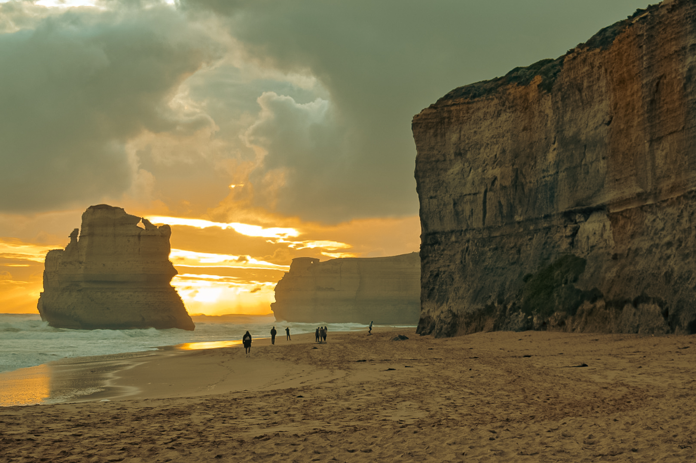
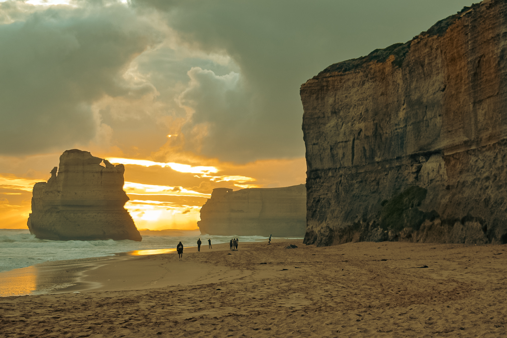

Pick Up
7:00
朝指定された場所で待っているとツアーの名前が書かれたワゴン車が到着！（オンラインでチケット購入時に滞在先のホテルを登録していたため泊まっているホテルの近くでピックアップしてくれました！）
それからメインエリアのホテルの近くを数ヶ所周りツアー参加者をピックアップしていくという形でツアーが始まりました。参加者は20名弱ほどで、ツアーの運営自体は運転手兼ガイドが1人で、運転しながら各停車ポイントの前にスポットの説明をしてくれたり、何時にはバスに戻ってきてねとボードに書いてくれたり、出発前には必ず人数の確認をしてくれました!
Torquay Front Beach
9:30

シティから出発して約2時間、1つ目の停車スポットに到着!ここでツアーのプランに含まれいる朝食を食べました!といってもガイドの人がスーパーで買ってきたであろうパウンドケーキみたいなものひとかけらと紅茶かコーヒーを選び参加者みんなで立ちながら食べるという感じでした!
ここで出発前に次のお手洗いがある場所は13:00のランチまではないということでお手洗いに行くことを勧められましたがあまり綺麗とはいえないのでおすすめしません、、、笑
Great Ocean Road Memorial Arch
10:30

ついにGreat Ocean Roadの入り口に到着！みんなそれぞれメモリアルアーチの前で記念撮影したりして滞在時間は10分〜15分ほどで次に出発！Great Ocean Roadの入り口には来たものの最終目的地まではまだまだです！笑
Google MapKennet River Koala Walk
11:40
３つめのスポットに到着！
野生のコアラがよく見られるという場所に停車し、木にいるであろう野生のコアラをみんなで捜索!着く前に説明がありコアラがとまっている場所は木の上の方ということでしたが思っているより木が高すぎて首が痛くなります!みんなで必死に探しましたがなかなか見つからず、見られないかもしれない、、、と思ったところ、ようやく1匹のコアラをツアー参加者が見つけてくれ、みんなで集まって野生のコアラの観察!野生のコアラは本当に木の上の上の方にいて、望遠レンズを使ってようやくしっかり確認することができました。
Apollo Bay Seafood Cafe
13:00

海辺の町に立ち寄りランチ休憩。ガイドの人が着く前に何個かお店をおすすめしてくれ、みんな好きな場所に行ってランチということで私はフィッシュ＆チップスのお店にしました!またここの町には他の観光客もたくさんいて、ランチ時間は50分と決められていたのでゆっくりしてる時間はありませんでした!魚の種類も何種類かありましたが英語の名前わからず適当に選らびましたがお店の人が持ってきてくれたとき、「これは俺の1番のおすすめの魚だ!」と言ってくれました！笑
実際フィッシュ＆チップスは初めて食べましたがすごくおいしかったです！！
他のお店はわかりませんが、ここのお店に綺麗なお手洗いがあるのでフィッシュ＆チップスを食べる人はここで行くことをおすすめします！笑
Great Otway National Park
13:50

ランチ休憩後、次のスポットであるグレート オトウェイ国立公園に立ち寄りました!ツアーの内容を詳しく調べず3日前ぐらいに急に予約した私は温帯雨林のウォーキングもするとは思っていませんでしたが、日本ではなかなか見られない巨大なシダの木がたくさんあり、マイナスイオンを感じながらジャングルを歩いてるような気分になれました!笑
Google MapTwelve Apostles
15:30
シティを出発してから約8時間半、ようやくツアーのハイライトである12使徒へ到着!ここでの滞在時間は40分ほどということで、ここでは展望から見る人と、ヘリコプターから見る人で別れることになり、私は迷いましたが展望から見る方にしました。展望から見る12使徒の景色は圧倒されるほどの絶景でした!!
（※ヘリコプターを選んだ人は別途約145オーストラリアドルの支払いが必要になります!また時間の関係から展望からの景色は見ることはできません。ですがヘリコプターで見る12使徒も必ず価値のある絶景のはずです!）
Loch Ard Gorge / Tom and Eva Lookout / The Razorback
16:40
次の絶景ポイントに到着!ここでは主に３つのエリアがあり、実際にロックアード渓谷の下まで降りることができたり、また上から違うポイントでさまざまな景色を見ることができました!（※ヘリコプター参加者はヘリコプターの待ち時間にもよりますがガイドの迎えを待ってここでみんなと合流し、ここからの景色は見れるはずです。）
Google MapGibson Steps
17:30
 

ツアー最後の目的地はギブソンステップス。ここでは滞在時間約20分でその間に急な階段を降り、また登らないとなければいけませんが、降りるとそこには大迫力の海と崖を間近で見るができました。ちょうど日が落ちるタイミングでもあったので素晴らしい絶景を見ることができました!!
Google MapFinal Stop
18:50
ツアーが終わりシティに戻る途中、小さな町に立ち寄ってくれ夕食をそれぞれ買うことができます。そして21:00頃シティに到着し、ガイドの人がそれぞれ降りたい場所で降ろしてくれツアー終了です。
このツアーに参加してみての感想 :
朝早くから夜まで、一日かけた長いツアーでしたが内容豊富で素晴らしい体験をすることができました!ツアーガイドの人も1人で一日中運転しながらなのにも関わらず最後までテンション高く、優しく安心できる案内をしてくれたことに感謝しています!
ここからは個人的な感想ですが、私は1人でこのツアーに参加したため最初は不安もありましたがガイド人がちゃんと毎回出発前に人数を確認してくれたり、何時までに戻ってきてねということをボードを書いてくれたため、安心することができました。ですが約5年ぶりの海外だったため、日常会話なら理解できますが、ツアーのスポットの説明は難しく所々でしか理解はできませんでした。（日本語でスポットの説明してくれているアプリがあります。）なので英語での日常会話を聞き取れるぐらいであれば参加はできますが、まったく理解できない場合はあまりお勧めはしません。また1日で行って戻るというツアーなので各所のスポットの滞在時間はそれほど長くありません。私みたいに一眼レフを持って、ゆっくり写真を撮りたいなという人には滞在時間は少し短く感じるかもしれません。またメルボルンの天候は運です!ガイドの人も言っていましたが1日で四季を感じられるぐらい天候がよく変わるので、晴れた日に行きたい人や、ゆっくり景色を味わいたい人は自分で車を借りていくことをおすすめします!ですが私のようにあまり時間のない方や、車を運転できない人にはこのツアーをおすすめします!1日でこれほどの体験はなかなかできませんし、一生の思い出に残る体験には間違いありません!